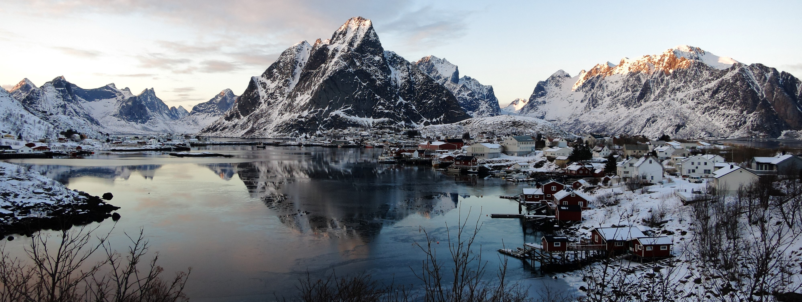
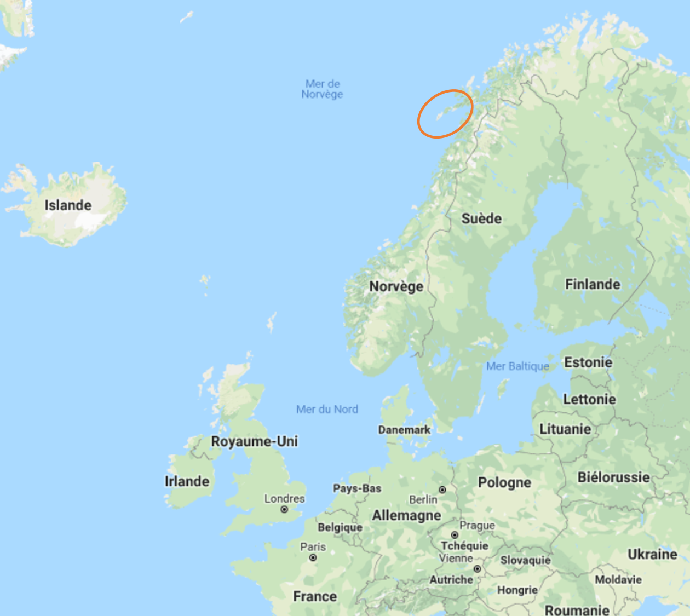

Petite Intro
L'idée générale
- Louer une voiture
- Passer une semaine à explorer les îles
- Randonner !
Quand ?
- 13 - 22 mars 2017
Qu'est-ce qui nous attend ?
- Des nuits en voiture
- De la neige
- Des paysages à couper le souffle
Un aperçu du programme
| Dates | Ville | Randos |
|---|---|---|
| 3nuits | Madona di Campiglio | Bocca di Tuckett, Val Nambrone, Monte Zeledria |
| 3nuits | Canazei | Via ferrata delle Trincee, Sassopiatto |
| 5nuits | Cortina d'Ampezzo | Lago di Sorapis, Tofana di Rozes,Cinque Torri, Tre Cime |
Ok, mais c'est où les Lofoten ?
Ce sont des îles au large de la Norvège, au Nord du Cercle Polaire !
Elles se situent en fait ici
